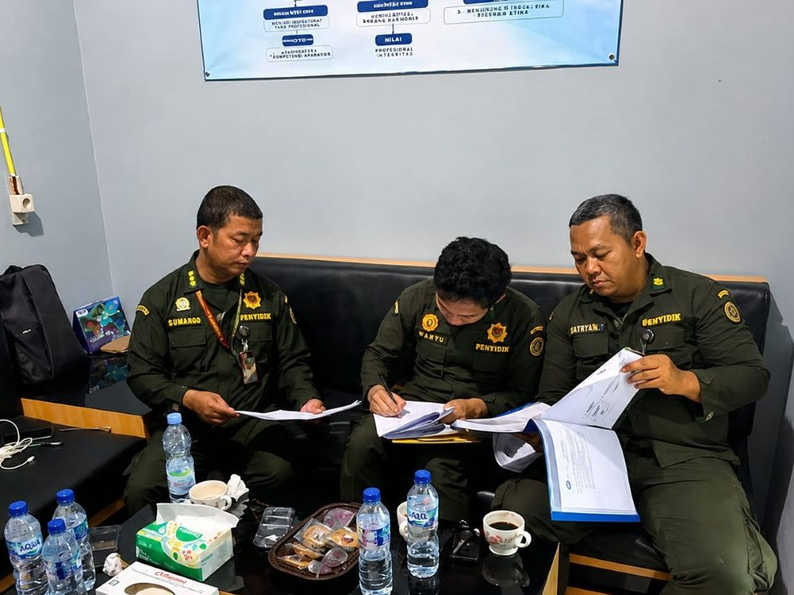
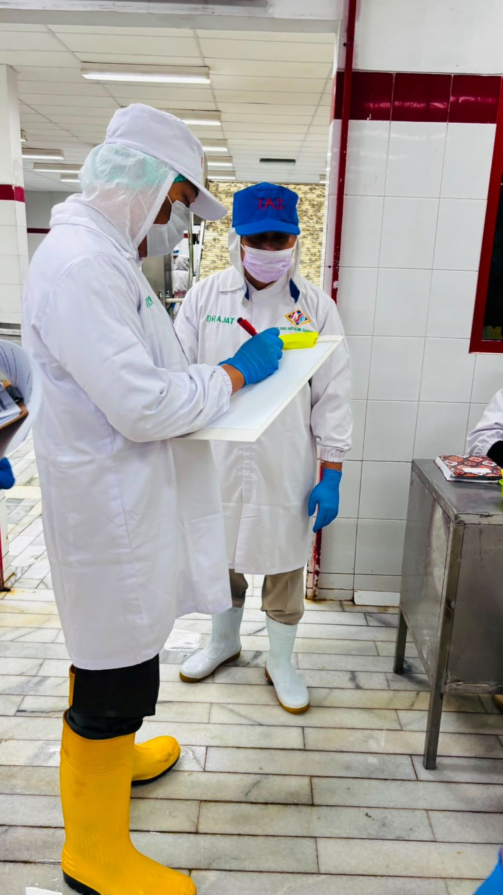
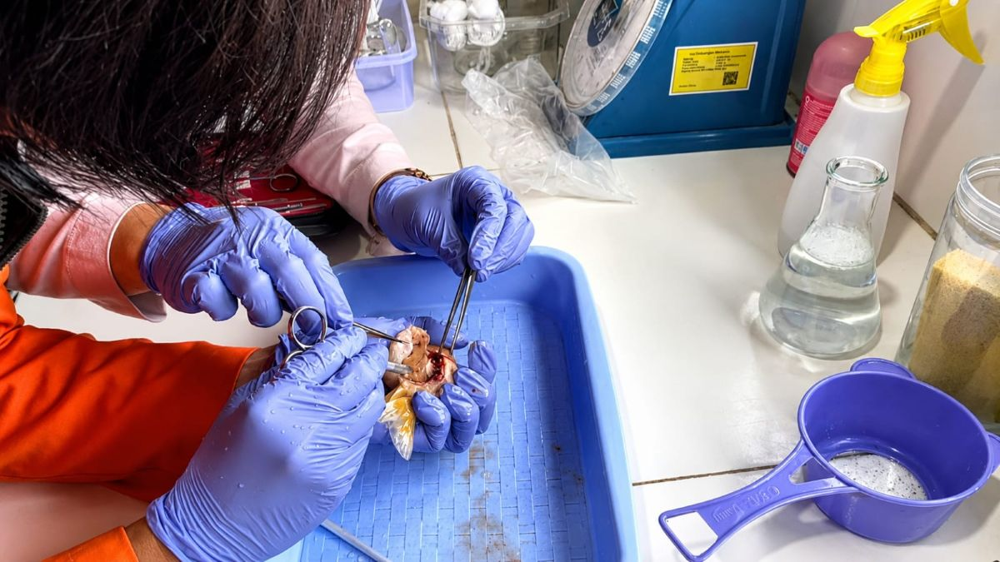
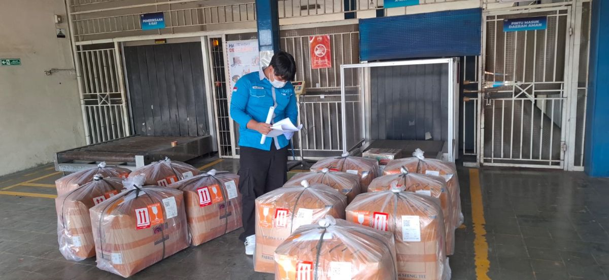
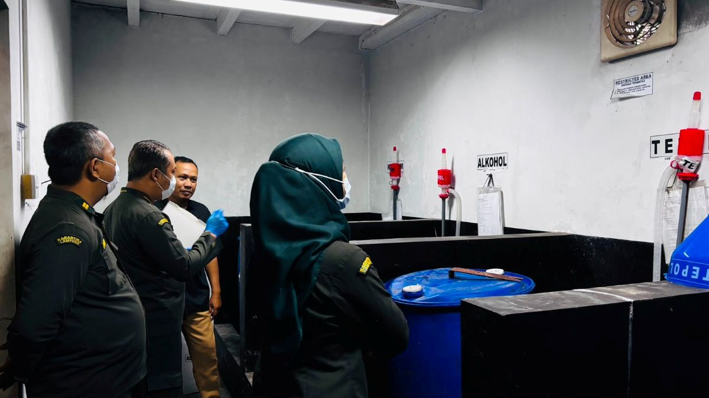
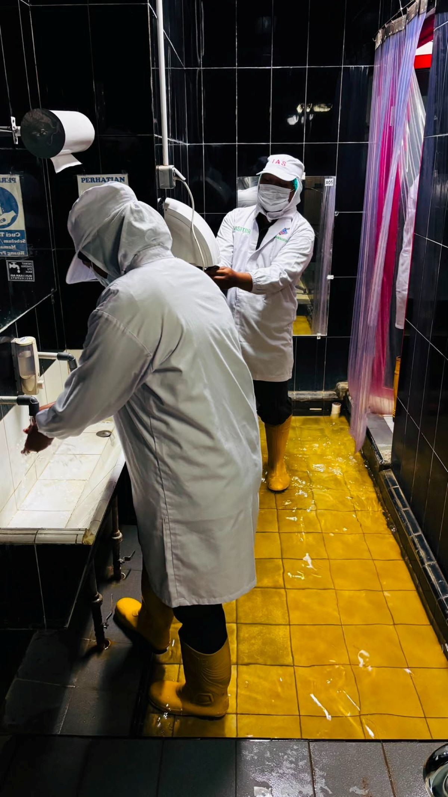
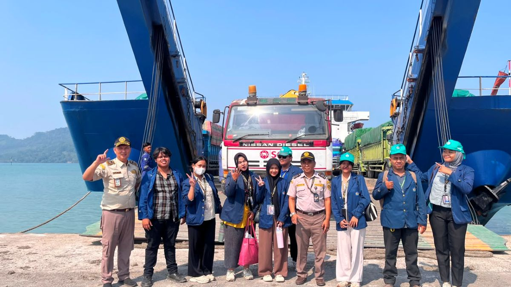

PemeriksaanPemeriksaan Media Pembawa
Pemeriksaan fisik ikan, dokumen, dan persyaratan karantina untuk memastikan kesesuaian jenis dan keamanan hayati.
Dokumentasi Kegiatan
Dokumentasi kegiatan identifikasi, pemeriksaan, monitoring, sampling, pengawasan, edukasi, dan penerapan biosekuriti.

PemeriksaanPemeriksaan fisik ikan, dokumen, dan persyaratan karantina untuk memastikan kesesuaian jenis dan keamanan hayati.

MonitoringKegiatan pemantauan dan pendataan Jenis Asing Invasif pada media pembawa ikan sebagai upaya deteksi dini.

Identifikasi & SamplingKegiatan identifikasi morfologi dan pengambilan sampel ikan untuk pemeriksaan laboratorium, analisis, serta penentuan jenis asing invasif.

PengawasanPengawasan pemasukan dan pengeluaran ikan di pintu pemasukan maupun pengeluaran wilayah kerja BKHIT Lampung.

EdukasiPenyampaian informasi kepada masyarakat dan pelaku usaha mengenai risiko penyebaran JAI serta pentingnya biosekuriti.

BiosekuritiPelaksanaan tindakan karantina dan langkah pengendalian untuk mencegah masuk dan tersebarnya JAI di Indonesia.

DokumentasiDokumentasi aktivitas monitoring, pemeriksaan, identifikasi, dan pengawasan JAI oleh petugas BKHIT Lampung.